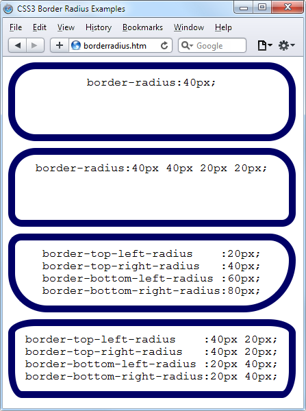

Advanced CSS with CSS3
The first implementation of CSS was drawn up in 1996, was released in 1999, and has been supported by all browser releases since 2001. The standard for this version, CSS1, was revised in 2008. Beginning in 1998, developers began drawing up the second specification, CSS2; its standard was completed in 2007 and revised in 2009.
Development for the CSS3 specification commenced in 2001, with some features being proposed as recently as 2009. Therefore, the development process will likely continue for some time before a final recommendation for CSS3 is approved. And even though CSS3 isn’t yet complete, people are already beginning to put forward suggestions for CSS4.
In this chapter, I’ll take you through the CSS3 features that have already been generally adopted by the major browsers. Some of these features provide functionality that hitherto could be provided only with JavaScript.
I recommend using CSS3 to implement dynamic features where you can, instead of JavaScript. The features provided by CSS make document attributes part of the document itself, instead of being tacked on through JavaScript. Making them part of the document is a cleaner design.
Attribute Selectors
In the previous chapter, I detailed the various CSS attribute selectors, which I will now quickly recap. Selectors are used in CSS to match HTML elements, and there are 10 different types, as detailed in Table 19-1.
Table 19-1. CSS selectors, pseudoclasses, and pseudoelements
| Selector type |
Example |
| Universal selector |
* { color:#555; } |
| Type selectors |
b { color:red; } |
| Class selectors |
.classname { color:blue; } |
| ID selectors |
#idname { background:cyan; } |
| Descendant selectors |
td em { color:green; } |
| Child selectors |
div > em { background:lime; } |
| Adjacent sibling selectors |
i + b { color:gray; } |
| Attribute selectors |
a[href='info.htm'] { color:red; } |
| Pseudoclasses |
a:hover { font-weight:bold; } |
| Pseudoelements |
P::first-letter { font-size:300%; } |
The CSS3 designers decided that most of these selectors work just fine the way they are, but three enhancements have been made so that you can more easily match elements based on the contents of their attributes.
Matching Parts of Strings
In CSS2 you can use a selector such as a[href='info.htm'] to match the string info.htm when found in an href attribute, but there’s no way to match only a portion of a string. However, CSS3 comes to the rescue with three new operators: ^, $, and *. If one directly precedes the = symbol, you can match the start, end, or any part of a string, respectively.
The ^ operator
This operator matches at the start of a string so, for example, the following will match any href attribute whose value begins with the string http://website :
a[href^='http://website']
Therefore, the following element will match:
<a href='http://website.com'>
But this will not:
<a href='http://mywebsite.com'>
The $ operator
To match only at the end of a string, you can use a selector such as the following, which will match any img tag whose src attribute ends with.png :
img[src$='.png']
For example, the following will match :
<img src='photo.png'>
But this will not:
<img src='snapshot.jpg'>
The * operator
To match any substring anywhere in the attribute, you can use a selector such as the following to find any links on a page that have the string google anywhere within them:
a[href*='google']
For example, the HTML segment <a href='http://google.com'> will match, while the segment <a href='http://gmail.com'> will not.
The box-sizing Property
The W3C box model specifies that the width and height of an object should refer only to the dimensions of an element’s content, ignoring any padding or border. But some web designers have expressed a desire to specify dimensions that refer to an entire element, including any padding and border.
To provide this feature, CSS3 lets you choose the box model you wish to use with the box-sizing property. For example, to use the total width and height of an object including padding and borders, you would use this declaration:
box-sizing:border-box;
Or, to have an object’s width and height refer only to its content, you would use this declaration (the default):
box-sizing:content-box;
Safari and Mozilla-based browsers (such as Firefox) require their own prefixes to this declaration ( -webkit- and – moz- ), as detailed at http://caniuse.com.
CSS3 Backgrounds
CSS3 provides two new properties: background-clip and background-origin. Between them, you can specify where a background should start within an element, and how to clip the background so that it doesn’t appear in parts of the box model where you don’t want it to.
To accomplish these, both properties support the following values: border-box
Refers to the outer edge of the border
padding-box
Refers to the outer edge of the padding area
content-box
Refers to the outer edge of the content area
The background-clip Property
The background-clip property specifies whether the background should be ignored (clipped) if it appears within either the border or padding area of an element. For example, the following declaration states that the background may display in all parts of an element, all the way to the outer edge of the border:
background-clip:border-box;
To keep the background from appearing within the border area of an element, you can restrict it to only the section of an element inside the outer edge of its padding area, like this:
background-clip:padding-box;
Or to restrict the background to display only within the content area of an element, you would use this declaration:
background-clip:content-box;
Figure 19-1 shows three rows of elements displayed in the Safari web browser, in which the first row uses border-box for the background-clip property, the second uses padding-box, and the third uses content-box.

Figure 19-1. Different ways of combining CSS3 background properties
In the first row, the inner box (an image file that has been loaded into the top left of the element, with repeating disabled) is allowed to display anywhere in the element. You can also clearly see it displayed in the border area of the first box because the border has been set to dotted.
In the second row, neither the background image nor the background shading displays in the border area, because they have been clipped to the padding area with a background-clip property value of padding-box.
Then, in the third row, both the background shading and the image have been clipped to display only within the inner content area of each element (shown inside a light-colored, dotted box), using a background-clip property of content-box.
The background-origin Property
With the background-origin property, you can control where a background image will be located by specifying where the top left of the image should start. For example, the following declaration states that the background image’s origin should be the top-left corner of the outer edge of the border:
background-origin:border-box;
To set the origin of an image to the top-left outer corner of the padding area, you would use this declaration:
background-origin:padding-box;
Or to set the origin of an image to the top-left corner of an element’s inner content section, you would use this declaration:
background-origin:content-box;
Looking again at Figure 19-1, you can see in each row the first box uses a background-origin property of border-box, the second uses padding-box, and the third uses content-box. Consequently, in each row the smaller inner box displays at the top left of the border in the first box, the top left of the padding in the second, and the top left of the content in the third box.
The only differences to note between the rows, with regard to the origins of the inner box in Figure 19-1, are that in rows 2 and 3 the inner box is clipped to the padding and content areas, respectively; therefore, outside these areas no portion of the box is displayed.
The background-size Property
In the same way that you can specify the width and height of an image when used in the <img> tag, you can now also do so for background images on the latest versions of all browsers.
You apply the property as follows (where ww is the width and hh is the height):
background-size:ww|px|px|hh|px;
If you prefer, you can use only one argument, and then both dimensions will be set to that value. Also, if you apply this property to a block-level element such as a <div> (rather than one that is inline such as a <span> ), you can specify the width and/or height as a percentage, instead of a fixed value.
Using the auto Value
If you wish to scale only one dimension of a background image, and then have the other one scale automatically to retain the same proportions, you can use the value auto for the other dimension, like this:
background-size:100px auto;
This sets the width to 100 pixels, and the height to a value proportionate to the increase or decrease in width.
Different browsers may require different versions of the various background property names, so please refer to http://caniuse.com when using them to ensure you are applying all the versions required for the browsers you are targeting.
Multiple Backgrounds
With CSS3 you can now attach multiple backgrounds to an element, each of which can use the previously discussed CSS3 background properties. Figure 19-2 shows an example of this; eight different images have been assigned to the background, to create the four corners and four edges of the certificate border.

Figure 19-2. A background created with multiple images
To display multiple background images in a single CSS declaration, separate them with commas. Example 19-1 shows the HTML and CSS that was used to create the background in Figure 19-2.
Example 19-1. Using multiple images in a background
<!DOCTYPE html>
<html> <!-- backgroundimages.html -->
<head>
<title>CSS3 Multiple Backgrounds Example</title>
<style>
.border {
font-family:'Times New Roman';
font-style :italic;
font-size :170%;
text-align :center;
padding :60px;
width :350px;
height :500px;
background :url('b1.gif') top left no-repeat,
url('b2.gif') top right no-repeat,
url('b3.gif') bottom left no-repeat,
url('b4.gif') bottom right no-repeat,
url('ba.gif') top repeat-x,
url('bb.gif') left repeat-y,
url('bc.gif') right repeat-y,
url('bd.gif') bottom repeat-x
}
</style>
</head>
<body>
<div class='border'>
<h1>Employee of the month</h1>
<h2>Awarded To:</h2>
<h3>__________________</h3>
<h2>Date:</h2>
<h3>___/___/_____</h3>
</div>
</body>
</html>
Looking at the CSS section, you see that the first four lines of the background declara‐ tion place the corner images into the four corners of the element, and the final four place the edge images, which are handled last because the order of priority for background images goes from high to low. In other words, where they overlap, additional background images will appear behind already placed images. If the GIFs were in the reverse order, the repeating edge images would display on top of the corners, which would be incorrect.
Using this CSS, you can resize the containing element to any dimensions, and the border will always correctly resize to fit, which is much easier than using tables or multiple elements for the same effect.
CSS3 Borders
CSS3 also brings a lot more flexibility to the way borders can be presented, by allowing you to independently change the colors of all four border edges, to display images for the edges and corners, to provide a radius value for applying rounded corners to borders, and to place box shadows underneath elements.
The border-color Property
There are two ways you can apply colors to a border. First, you can pass a single color to the property, as follows:
border-color:#888;
This property sets all the borders of an element to mid-gray. You can also set border colors individually, like this (which sets the border colors to various shades of gray):
border-top-color :#000;
border-left-color :#444;
border-right-color :#888;
border-bottom-color:#ccc;
You can also set all the colors individually with a single declaration, as follows:
border-color:#f00 #0f0 #880 #00f;
This declaration sets the top border color to #f00, the right one to #0f0, the bottom one to #880, and the left one to #00f (red, green, orange, and blue, respectively). You can also use color names for the arguments.
The border-radius Property
Prior to CSS3, talented web developers came up with numerous tweaks and fixes in order to achieve rounded borders, generally using <table> or <div> tags.
But now adding rounded borders to an element is really simple, and it works on the latest versions of all major browsers, as shown in Figure 19-3, in which a 10-pixel border is displayed in different ways. Example 19-2 shows the HTML for this.
Example 19-2. The border-radius property
<!DOCTYPE html>
<html> <!-- borderradius.html -->
<head>
<title>CSS3 Border Radius Examples</title>
<style>
.box {
margin-bottom:10px;
font-family :'Courier New', monospace;
font-size :12pt;
text-align :center;
padding :10px;
width :380px;
height :75px;
border :10px solid #006;
}
.b1 {
-moz-border-radius :40px;
-webkit-border-radius:40px;
border-radius :40px;
}
.b2 {
-moz-border-radius :40px 40px 20px 20px;
-webkit-border-radius:40px 40px 20px 20px;
border-radius :40px 40px 20px 20px;
}
.b3 {
-moz-border-radius-topleft :20px;
-moz-border-radius-topright :40px;
-moz-border-radius-bottomleft :60px;
-moz-border-radius-bottomright :80px;
-webkit-border-top-left-radius :20px;
-webkit-border-top-right-radius :40px;
-webkit-border-bottom-left-radius :60px;
-webkit-border-bottom-right-radius:80px;
border-top-left-radius :20px;
border-top-right-radius :40px;
border-bottom-left-radius :60px;
border-bottom-right-radius :80px;
}
.b4 {
-moz-border-radius-topleft :40px 20px;
-moz-border-radius-topright :40px 20px;
-moz-border-radius-bottomleft :20px 40px;
-moz-border-radius-bottomright :20px 40px;
-webkit-border-top-left-radius :40px 20px;
-webkit-border-top-right-radius :40px 20px;
-webkit-border-bottom-left-radius :20px 40px;
-webkit-border-bottom-right-radius:20px 40px;
border-top-left-radius :40px 20px;
border-top-right-radius :40px 20px;
border-bottom-left-radius :20px 40px;
border-bottom-right-radius :20px 40px;
}
</style>
</head>
<body>
<div class='box b1'>
border-radius:40px;
</div>
<div class='box b2'>
border-radius:40px 40px 20px 20px;
</div>
<div class='box b3'>
border-top-left-radius :20px;<br>
border-top-right-radius :40px;<br>
border-bottom-left-radius :60px;<br>
border-bottom-right-radius:80px;
</div>
<div class='box b4'>
border-top-left-radius :40px 20px;<br>
border-top-right-radius :40px 20px;<br>
border-bottom-left-radius :20px 40px;<br>
border-bottom-right-radius:20px 40px;
</div>
</body>
</html>

Figure 19-3. Mixing and matching various border radius properties
So, for example, to create a rounded border with a radius of 19 pixels, you could simply use the following declaration:
border-radius:20px;
Although most browsers will work fine with border radius properties (including IE), some current (and many older) versions of the major browsers use different property names. So, if you wish to support them all, you will need to also use the relevant browser specific prefixes for them, such as -moz- and -webkit-. To ensure that Example 19-2 works in all browsers, I have included all the required prefixes.
You can specify a separate radius for each of the four corners, like this (applied in a clockwise direction starting from the top-left corner):
border-radius:10px 20px 30px 40px;
If you prefer, you can also address each corner of an element individually, like this:
border-top-left-radius :20px;
border-top-right-radius :40px;
border-bottom-left-radius :60px;
border-bottom-right-radius:80px;
And, when referencing individual corners, you can supply two arguments to choose a different vertical and horizontal radius (giving more interesting and subtle borders), like this:
border-top-left-radius :40px 20px;
border-top-right-radius :40px 20px;
border-bottom-left-radius :20px 40px;
border-bottom-right-radius:20px 40px;
The first argument is the horizontal, and the second is the vertical radius.
Box Shadows
To apply a box shadow, specify a horizontal and vertical offset from the object, the amount of blurring to add to the shadow, and the color to use, like this:
box-shadow:15px 15px 10px #888;
The two instances of 15px specify the vertical and horizontal offset from the element, and these values can be negative, zero, or positive. The 10px specifies the amount of blurring, with smaller values resulting in less blurring. And the #888 is the color for the shadow, which can be any valid color value. The result of this declaration can be seen in Figure 19-4.

Figure 19-4. A box shadow displayed under an element
You must use the WebKit and Mozilla prefixes to this property for those browsers.
Element
Overflow
In CSS2, you can indicate what to do when one element is too large to be fully contained by its parent by setting the overflow property to hidden, visible, scroll, or auto. But with CSS3, you can now separately apply these values in the horizontal or vertical directions, too, as with these example declarations:
overflow-x:hidden;
overflow-x:visible;
overflow-y:auto;
overflow-y:scroll;
Multicolumn Layout
One of the most requested features by web developers is multiple columns, and this has finally been realized in CSS3, with Internet Explorer 10 being the last major browser to adopt it.
Now, flowing text over multiple columns is as easy as specifying the number of columns, and then (optionally) choosing the spacing between them and the type of dividing line (if any), as shown in Figure 19-5 (created using Example 19-3 ).

Figure 19-5. Flowing text in multiple columns
Example 19-3. Using CSS to create multiple columns
<!DOCTYPE html>
<html> <!-- multiplecolumns.html -->
<head>
<title>Multiple Columns</title>
<style>
.columns {
text-align :justify;
font-size :16pt;
-moz-column-count :3;
-moz-column-gap :1em;
-moz-column-rule :1px solid black;
-webkit-column-count:3;
-webkit-column-gap :1em;
-webkit-column-rule :1px solid black;
column-count :3;
column-gap :1em;
column-rule :1px solid black;
}
</style>
</head>
<body>
<div class='columns'>
Now is the winter of our discontent
Made glorious summer by this sun of York;
And all the clouds that lour'd upon our house
In the deep bosom of the ocean buried.
Now are our brows bound with victorious wreaths;
Our bruised arms hung up for monuments;
Our stern alarums changed to merry meetings,
Our dreadful marches to delightful measures.
Grim-visaged war hath smooth'd his wrinkled front;
And now, instead of mounting barded steeds
To fright the souls of fearful adversaries,
He capers nimbly in a lady's chamber
To the lascivious pleasing of a lute.
</div>
</body>
</html>
Within the.columns class, the first two lines simply tell the browser to right-justify the text and to set it to a font size of 16pt. These declarations aren’t needed for multiple columns, but they improve the text display. The remaining lines set up the element so that, within it, text will flow over three columns, with a gap of 1em between the columns, and with a single-pixel border down the middle of each gap.
In Example 19-3, Mozilla- and WebKit-based browsers require browser-specific prefixes to the declarations.
Colors and Opacity
The ways in which you can define colors have been greatly expanded with CSS3, and you can now also use CSS functions to apply colors in the common formats RGB (Red, Green, and Blue), RGBA (Red, Green, Blue, and Alpha), HSL (Hue, Saturation, and Luminance), and HSLA (Hue, Saturation, Luminance, and Alpha). The Alpha value specifies a color’s transparency, which allows underlying elements to show through.
HSL Colors
To define a color with the hsl function, you must first choose a value for the hue between 0 and 359 from a color wheel. Any higher color numbers simply wrap around to the beginning again, so the value of 0 is red, and so are the values 360 and 720.
In a color wheel, the primary colors of red, green, and blue are separated by 120 degrees, so that pure red is 0, green is 120, and blue is 240. The numbers between these values represent shades comprising different proportions of the primary colors on either side.
Next you need the saturation level, which is a value between 0 and 100 percent. This specifies how washed-out or vibrant a color will appear. The saturation values commence in the center of the wheel with a mid-gray color (a saturation of 0 percent) and then become more and more vivid as they progress to the outer edge (a saturation of 100 percent).
All that’s left then is for you to decide how bright you want the color to be, by choosing a luminance value of between 0 and 100 percent. A value of 50% for the lumi
nance gives the fullest, brightest color; decreasing the value (down to a minimum of 0%) darkens the color until it displays as black; and increasing the value (up to a maximum of 100%) lightens the color until it shows as white. You can visualize this as if you are mixing levels of either black or white into the color.
Therefore, for example, to choose a fully saturated yellow color with standard percent brightness, you would use a declaration such as this:
color:hsl(60, 100%, 50%);
Or, for a darker blue color, you might use a declaration such as this:
color:hsl(240, 100%, 40%);
You can also use this (and all other CSS color functions) with any property that expects a color, such as background-color, and so on.
HSLA Colors
To provide even further control over how colors will appear, you can use the hsla function, supplying it with a fourth (or alpha) level for a color, which is a floating- point value between 0 and 1. A value of 0 specifies that the color is totally transparent, while 1 means it is fully opaque.
Here’s how you would choose a fully saturated yellow color with standard brightness and 30 percent opacity:
color:hsla(60, 100%, 50%, 0.3);
Or, for a fully saturated but lighter blue color with 82 percent opacity, you might use this declaration:
color:hsla(240, 100%, 60%, 0.82);
RGB Colors
You will probably be more familiar with using the RGB system of selecting a color, as it’s similar to using the #nnnnnn and #nnn color formats. For example, to apply a yellow color to a property, you can use either of the following declarations (the first supporting 16 million colors, and the second supporting 4,000):
color:#ffff00;
color:#ff0;
You can also use the CSS rgb function to achieve the same result, but you use decimal numbers instead of hexadecimal (where 255 decimal is ff hexadecimal):
color:rgb(255, 255, 0);
But even better than that, you don’t even have to think in amounts of up to 256 anymore, because you can specify percentage values, like this:
color:rgb(100%, 100%, 0);
In fact, you can now get very close to a desired color by simply thinking about its primary colors. For example, green and blue make cyan, so to create a color close to cyan, but with more blue in it than green, you could make a good first guess at 0% red, 40% green, and 60% blue, and try a declaration such as this:
color:rgb(0%, 40%, 60%);
RGBA Colors
As with the hsla function, the rgba function supports a fourth alpha argument, so you can, for example, apply the previous cyan-like color with an opacity of 40 percent by using a declaration such as this:
color:rgba(0%, 40%, 60%, 0.4);
The opacity Property
The opacity property provides the same alpha control as the hsla and rgba func‐ tions, but lets you modify an object’s opacity (or transparency if you prefer) separately from its color.
To use it, apply a declaration such as the following to an element (which in this example sets the opacity to 25 percent, or 75 percent transparent):
opacity:0.25;
WebKit- and Mozilla-based browsers require browser-specific prefixes to this property. And for backward compatibility with releases of Internet Explorer prior to version 9, you should add the following declaration (in which the opacity value is multiplied by 100):
filter:alpha(opacity='25');
Text Effects
A number of new effects can now be applied to text with the help of CSS3, including text shadows, text overlapping, and word wrapping.
The text-shadow Property
The text-shadow property is similar to the box-shadow property and takes the same set of arguments: a horizontal and vertical offset, an amount for the blurring, and the color to use. For example, the following declaration offsets the shadow by 3 pixels both horizontally and vertically, and displays the shadow in dark gray, with a blurring of 4 pixels:
text-shadow:3px 3px 4px #444;
The result of this declaration looks like Figure 19-6, and works in all recent versions of all major browsers (but not IE9 or lower).

Figure 19-6. Applying a shadow to text
The text-overflow Property
When using any of the CSS overflow properties with a value of hidden, you can also use the text-overflow property to place an ellipsis (three dots) just before the cutoff to indicate that some text has been truncated, like this:
text-overflow:ellipsis;
Without this property, when the text “To be, or not to be. That is the question.” is truncated, the result will look like Figure 19-7 ; with the declaration applied, however, the result is like Figure 19-8.

Figure 19-7. The text is automatically truncated

Figure 19-8. Instead of being cut off, the text trails off using an ellipsis
For this to work, three things are required:
• The element should have an overflow property that is not visible, such as over flow:hidden.
• The element must have the white-space:nowrap property set to constrain the text.
• The width of the element must be less than that of the text to truncate.
The word-wrap Property
When you have a really long word that is wider than the element containing it, it will either overflow or be truncated. But as an alternative to using the text-overflow property and truncating text, you can use the word-wrap property with a value of break-word to wrap long lines, like this:
word-wrap:break-word;
For example, in Figure 19-9 the word Honorificabilitudinitatibus is too wide for the containing box (whose righthand edge is shown as a solid vertical line between the letters t and a ) and, because no overflow properties have been applied, it has overflowed its bounds.

Figure 19-9. The word is too wide for its container and has overflowed
But in Figure 19-10, the word-wrap property of the element has been assigned a value of break-word, so the word has neatly wrapped around to the next line.

Figure 19-10. The word now wraps at the right-hand edge
Web Fonts
The use of CSS3 web fonts vastly increases the typography available to web designers by allowing fonts to be loaded in and displayed from across the Web, not just from the user’s computer. To achieve this, declare a web font by using @font-face, like this:
@font-face
{
font-family:FontName;
src:url('FontName.otf');
}
The url function requires a value containing the path or URL of a font. On most browsers, you can use either TrueType (.ttf ) or OpenType (.otf ) fonts, but Internet Explorer restricts you to TrueType fonts that have been converted to EOT (.eot ).
To tell the browser the type of font, you can use the format function, like this (for OpenType fonts):
@font-face
{
font-family:FontName;
src:url('FontName.otf') format('opentype');
}
Or this for TrueType fonts:
@font-face
{
font-family:FontName;
src:url('FontName.ttf') format('truetype');
}
However, because Microsoft Internet Explorer accepts only EOT fonts, it ignores @font-face declarations that contain the format function.
Google Web Fonts
One of the best ways to use web fonts is to load them in for free from Google’s servers. To find out more about this, check out the Google Fonts website (at http:// google.com/fonts, see Figure 19-11 ), where you can get access to over 630 font families, and counting!

Figure 19-11. It’s easy to include Google’s web fonts
To show you how easy it is to use one of these fonts, here’s how you load a Google font (in this case, Lobster) into your HTML for use in <h1> headings:
<!DOCTYPE html>
<html>
<head>
<style>
h1 { font-family:'Lobster', arial, serif; }
</style>
<link href='http://fonts.googleapis.com/css?family=Lobster'
rel='stylesheet' type='text/css'>
</head>
<body>
<h1>Hello</h1>
</body>
</html>
Transformations
Using transformations, you can skew, rotate, stretch, and squash elements in any of up to three dimensions (yes, 3D is supported, but only in WebKit-based browsers for now). This makes it easy to create great effects by stepping out of the uniform rectangular layout of <div> and other elements, because now they can be shown at a variety of angles and in many different forms.
To perform a transformation, use the transform property (which unfortunately has browser-specific prefixes for Mozilla, WebKit, Opera, and Microsoft browsers, so once again you’ll need to refer to http://caniuse.com ).
You can apply various properties to the transform property, starting with the value none, which resets an object to a nontransformed state:
transform:none;
You can supply one or more of the following functions to the transform property:
matrix
Transforms an object by applying a matrix of values to it
translate
Moves an element’s origin
scale
Scales an object
rotate
Rotates an object
skew
Skews an object
There are also single versions of many of these functions, such as translateX, scaleY, and so on.
So, for example, to rotate an element clockwise by 45 degrees, you could apply this declaration to it:
transform:rotate(45deg);
At the same time, you could enlarge this object, as in the following declaration, which enlarges its width by 1.5 times and its height by 2 times, and then performs the rotation. Figure 19-12 shows an object before the transformations are applied, and then afterward:
transform:scale(1.5, 2) rotate(45deg);

Figure 19-12. An object before and after transformation
3D Transformations
You can also transform objects in three dimensions by using the following CSS3 3D transformation features:
perspective
Releases an element from 2D space and creates a third dimension within which it can
move
transform-origin
Sets the location at which all lines converge to a single point
translate3d
Moves an element to another location in its 3D space
scale3d
Rescales one or more dimensions
rotate3d
Rotates an element around any of the x-, y-, and z-axes
Figure 19-13 shows a 2D object that has been rotated in 3D space with a CSS rule such as the following:
transform:perspective(200px) rotateX(10deg) rotateY(20deg) rotateZ(30deg);

Figure 19-13. A figure rotated in 3D space
For more information, please refer to the tutorial at http://tinyurl.com/3dcsstransforms (or use the direct URL http://24ways.org/2010/intro-to-css-3d-transforms ).
Transitions
Also appearing on all the latest versions of the major browsers (including Internet Explorer 10, but not lower versions) is a dynamic new feature called transitions. These specify an animation effect you want to occur when an element is transformed, and the browser will automatically take care of all the in-between frames for you.
There are four properties you should supply in order to set up a transition, as follows:
transition-property :property;
transition-duration :time;
transition-delay :time;
transition-timing-function:type;
You must preface these properties with the relevant browser prefixes for Mozilla, WebKit, Opera, and Microsoft browsers.
Properties to Transition
Transitions have properties such as height and border-color. Specify the properties you want to change in the CSS property named transition-property (here the word property is used by different tools to mean different things). You can include multiple properties by separating them with commas, like this:
transition-property:width, height, opacity;
Or, if you want absolutely everything about an element to transition (including colors), use the value all, like this:
transition-property:all;
Transition Duration
The transition-duration property requires a value of 0 seconds or greater, like the following, which specifies that the transition should take 1.25 seconds to complete:
transition-duration:1.25s;
Transition Delay
If the transition-delay property is given a value greater than 0 seconds (the default), it introduces a delay between the initial display of the element and the beginning of the transition. The following starts the transition after a 0.1-second delay:
transition-delay:0.1s;
If the transition-delay property is given a value of less than 0 seconds (in other words, a negative value), the transition will execute the moment the property is changed, but will appear to have begun execution at the specified offset, partway through its cycle.
Transition Timing
The transition-timing function property requires one of the following values:
ease
Start slowly, get faster, and then end slowly.
linear
Transition at constant speed.
ease-in
Start slowly, and then go quickly until finished.
ease-out
Start quickly, stay fast until near the end, and then end slowly.
ease-in-out
Start slowly, go fast, and then end slowly.
Using any of the values containing the word ease ensures that the transition looks extra fluid and natural, unlike a linear transition that somehow seems more mechanical. And if these aren’t sufficiently varied for you, you can also create your own transitions using the cubic-bezier function.
For example, following are the declarations used to create the preceding five transition types, illustrating how you can easily create your own:
transition-timing-function:cubic-bezier(0.25, 0.1, 0.25, 1);
transition-timing-function:cubic-bezier(0, 0, 1, 1);
transition-timing-function:cubic-bezier(0.42, 0, 1, 1);
transition-timing-function:cubic-bezier(0, 0, 0.58, 1);
transition-timing-function:cubic-bezier(0.42, 0, 0.58, 1);
Shorthand Syntax
You may find it easier to use the shorthand version of this property and include all the values in a single declaration like the following, which will transition all properties in a linear fashion, over a period of.3 seconds, after an initial (optional) delay of. 2 seconds:
transition:all.3s linear.2s;
Doing so will save you the trouble of entering many very similar declarations, particularly if you are supporting all the major browser prefixes.
Example 19-4 illustrates how you might use transitions and transformations together. The CSS creates a square, orange element with some text in it, and a hover pseudo-class specifying that when the mouse passes over the object, it should rotate by 180 degrees and change from orange to yellow (see Figure 19-14 ).
Example 19-4. A transition on hover effect
<!DOCTYPE html>
<html>
<head>
<title>Transitioning on hover</title>
<style>
#square {
position :absolute;
top :50px;
left :50px;
width :100px;
height :100px;
padding :2px;
text-align :center;
border-width :1px;
border-style :solid;
background :orange;
transition :all.8s ease-in-out;
-moz-transition :all.8s ease-in-out;
-webkit-transition:all.8s ease-in-out;
-o-transition :all.8s ease-in-out;
-ms-transition :all.8s ease-in-out;
}
#square:hover {
background :yellow;
-moz-transform :rotate(180deg);
-webkit-transform :rotate(180deg);
-o-transform :rotate(180deg);
-ms-transform :rotate(180deg);
transform :rotate(180deg);
}
</style>
</head>
<body>
<div id='square'>
Square shape<br>
created using<br>
a simple div<br>
element with<br>
a 1px border
</div>
</body>
</html>

Figure 19-14. The object rotates and changes color when hovered over
The sample code caters to all browsers by providing browser-specific versions of the declarations. On all the latest browsers (including IE10 or higher), the object will rotate clockwise when hovered over, while slowly changing from orange to yellow. CSS transitions are smart in that when they are cancelled, they smoothly return to their original value. So if you move the mouse away before the transition has completed, it will instantly reverse and start transition back to its initial state.